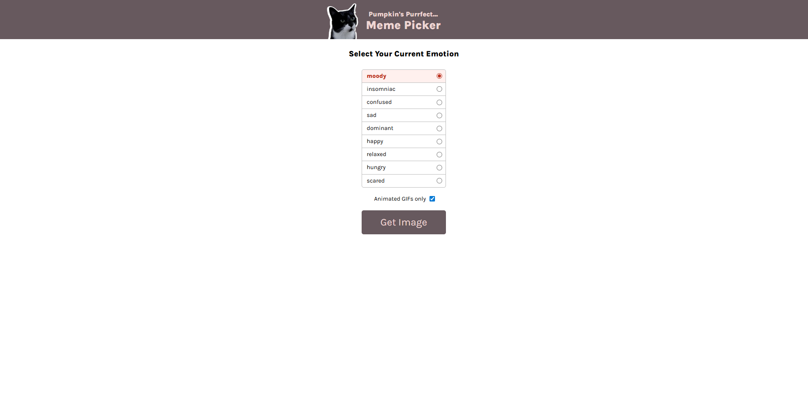
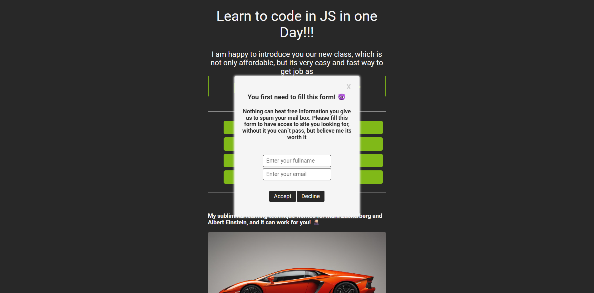
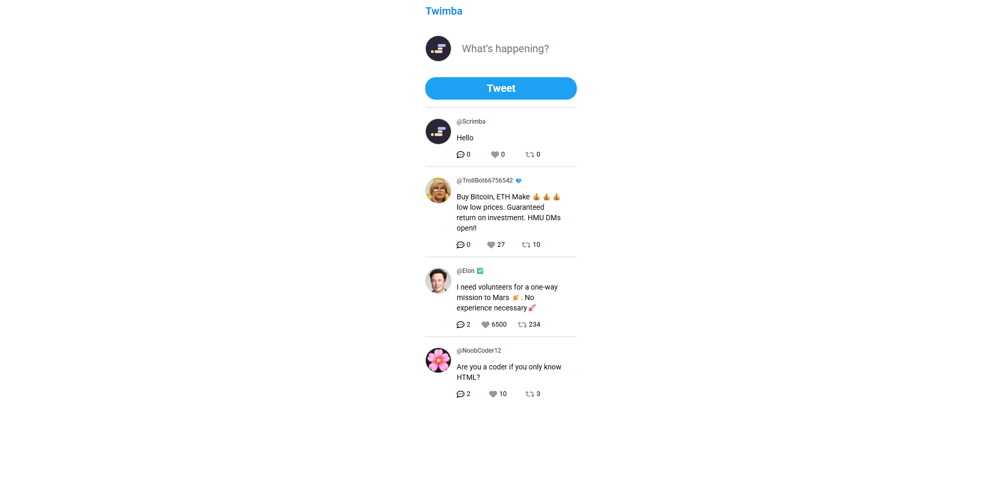

October 10, 2023
October 10, 2023
Movie Watchlist
A web application for searching movies and saving them to a personal watchlist. This project is built with JavaScript and demonstrates working with third-party API(OMDb).
Key features include fetching data asynchronously and persisting user data using localstorage.
 October 23, 2023
October 23, 2023
Color Picker
A color scheme generator that fetches palettes from a third-party API(TheColorAPI). This app is built with JavaScript and showcases advanced DOM manipulation via dynamically rendering color schemes and copying color codes to the clipboard.
You can try it here: Color Scheme Picker
 November 13, 2023
November 13, 2023
React Business Card
My first project built with the React library. This simple static business card served as a hands-on introduction to React core concepts, like component-based architecture, JSX syntax, and passing data between components using props.
You can see it here: React Business Card

March 15, 2023
Meme Picker
A fun app built with JavaScript. The user selects an emotion, and the app dynamically displays a corresponding cat meme.
You can try it here: Meme Picker

March 23, 2023
Pop Up Prank
Simple project built with HTML, CSS, and JavaScript. The goal was to practice advanced DOM manipulation and event handling to create annoying "prank" pop up.

March 5, 2023
Twitter Clone
Front-End Twitter clone(Twimba) built with JavaScript. The app dynamically renders "tweets" from a local data file adn simulates key interactions like likes, retweets, and replies, all handled with client side DOM manipulation.